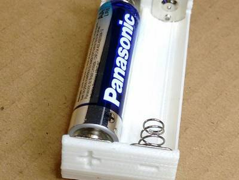
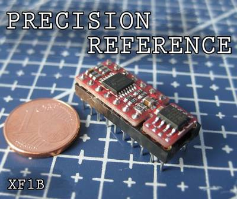

2016-07-14 - Nº 63

Editorial
Esta é a Newsletter Nº 63 que se apresenta com o mesmo formato que as anteriores. Se gostar da Newsletter partilhe-a!
Todas as Newsletters encontram-se indexadas no link.
Esta Newsletter tem os seguintes tópicos:
Esta semana ficámos a conhecer o código fonte que permitiu a Apollo 11 ir à Lua. Está tudo publicado no Github. O Rover Curiosity voltou a estar totalmente operacional depois de na semana passada ter entrado em modo de "Segurança". A Sifive, apresentou uma família de sistemas designada por FReedom. A plataforma sobre a qual foram desenvolvidos é a arquitectura RISC-V que alguns fundadores da companhia desenvolveram na Universidade de Berkeley na Califórnia.
Esta semana estão listados na Newsletter cerca de 40 projectos de maker que abordam os mais diversos temas.
 João Alves ([email protected])
João Alves ([email protected])
O conteúdo da Newsletter encontra-se sob a licença  Creative Commons Attribution-NonCommercial-ShareAlike 4.0 International License.
Creative Commons Attribution-NonCommercial-ShareAlike 4.0 International License.
Novidades da Semana ^
Original Apollo 11 Guidance Computer (AGC) source code for the command and lunar modules.
"Original Apollo 11 guidance computer (AGC) source code for Command Module (Comanche055) and Lunar Module (Luminary099). Digitized by the folks at Virtual AGC and MIT Museum. The goal is to be a repo for the original Apollo 11 source code. As such, PRs are welcome for any issues identified between the transcriptions in this repository and the original source scans for Luminary 099 and Comanche 055, as well as any files I may have missed."
Curiosity Mars Rover Resumes Full Operations
"NASA's Curiosity Mars rover is resuming full operations today, following work by engineers to investigate why the rover put itself into a safe standby mode on July 2. The rover team brought Curiosity out of safe mode on July 9. The most likely cause of entry into safe mode has been determined to be a software mismatch in one mode of how image data are transferred on board. Science activity planning for the rover is avoiding use of that mode, which involves writing images from some cameras' memories into files on the rover's main computer. Alternate means are available for handling and transmitting all image data."
SiFive Introduces Industry’s First Open-Source Chip Platforms

"SiFive, the first fabless semiconductor company to build customized, open-source enabled semiconductors, today announced its flagship Freedom family of system on a chip (SoC) platforms. Built around the free and open RISC-V instruction set architecture invented by the company’s founders at the University of California, Berkeley, SiFive’s Freedom U500 and Freedom E300 platforms represent a fundamentally new approach to designing and producing SoCs that redefines traditional silicon business models and reverses the industry’s prohibitively rising licensing, design and implementation costs."
Outras notícias
- Lepton image compression: saving 22% losslessly from images at 15MB/s
- Next Generation Dual-Mode Bluetooth® Audio Products from Microchip
- Microsemi Announces Imaging/Video Solution Providing a Secure, Reliable, Low Power Device for Imaging Applications
- Allegro MicroSystems, LLC Announces New DMOS Microstepping Driver with Translator and Overcurrent Protection
Ciência e Tecnologia ^
‘Green’ Electronic Materials Produced with Synthetic Biology

"Scientists at the University of Massachusetts Amherst report in the current issue of Small that they have genetically designed a new strain of bacteria that spins out extremely thin and highly conductive wires made up solely of non-toxic, natural amino acids. Researchers led by microbiologist Derek Lovley say the wires, which rival the thinnest wires known to man, are produced from renewable, inexpensive feedstocks and avoid the harsh chemical processes typically used to produce nanoelectronic materials."
Graphene-infused packaging is a million times better at blocking moisture
"Plastic packaging might seem impenetrable — and sometimes nearly impossible to remove — but water molecules can still pass through. And this permeability to moisture can limit the lifespan of a product. To better protect goods such as electronics and medicines, scientists have developed a new kind of packaging that incorporates a single layer of graphene. They report their material, which reduces by a million fold how much water can get through, in the journal ACS Nano. These days, packaging is everywhere, sometimes even on individual fruits or vegetables. Wrapping products from food to electronics in plastic films protects them from dust, bacteria and to some extent water. But to maximize the lifetime of a moisture-sensitive device such as an organic light-emitting diode for more than a year, for example, the packaging must restrict water vapor from entering at a rate of less than 10-6 grams per square meter every day, according to Praveen C. Ramamurthy. Today’s typical packaging is far from achieving that goal. Ramamurthy and colleagues wanted to see whether adding graphene to flexible polymer films would help."
Robot helps nurses schedule tasks on labor floor
"Today’s robots are awkward co-workers because they are often unable to predict what humans need. In hospitals, robots are employed to perform simple tasks such as delivering supplies and medications, but they have to be explicitly told what to do. A team from MIT’s Computer Science and Artificial Intelligence Laboratory (CSAIL) thinks that this will soon change, and that robots might be most effective by helping humans perform one of the most complex tasks of all: scheduling. In a pair of new papers, CSAIL researchers demonstrate a robot that, by learning from human workers, can help assign and schedule tasks in fields ranging from medicine to the military."
Berkeley Lab Scientists Grow Atomically Thin Transistors and Circuits
"In an advance that helps pave the way for next-generation electronics and computing technologies—and possibly paper-thin gadgets —scientists with the U.S. Department of Energy’s Lawrence Berkeley National Laboratory (Berkeley Lab) developed a way to chemically assemble transistors and circuits that are only a few atoms thick. What’s more, their method yields functional structures at a scale large enough to begin thinking about real-world applications and commercial scalability."
Discovery Could Dramatically Boost Efficiency of Perovskite Solar Cells
"Scientists from the Department of Energy’s Lawrence Berkeley National Laboratory (Berkeley Lab) have discovered a possible secret to dramatically boosting the efficiency of perovskite solar cells hidden in the nanoscale peaks and valleys of the crystalline material. Solar cells made from compounds that have the crystal structure of the mineral perovskite have captured scientists’ imaginations. They’re inexpensive and easy to fabricate, like organic solar cells. Even more intriguing, the efficiency at which perovskite solar cells convert photons to electricity has increased more rapidly than any other material to date, starting at three percent in 2009—when researchers first began exploring the material’s photovoltaic capabilities—to 22 percent today. This is in the ballpark of the efficiency of silicon solar cells. Now, as reported online July 4 in the journal Nature Energy, a team of scientists from the Molecular Foundry and the Joint Center for Artificial Photosynthesis, both at Berkeley Lab, found a surprising characteristic of a perovskite solar cell that could be exploited for even higher efficiencies, possibly up to 31 percent."
Graphene Flexes its Muscles in Boise State Study
"A team of researchers from Boise State University, led by Eric Krueger and David Estrada, have published an article in the American Chemical Society’s Biomaterials Science and Engineering journal. Titled “Graphene Foam as a 3-dimensional Platform for Myotube Growth,” it focuses on a study demonstrating the suitability of graphene foam as a scaffold for growing functional muscle tissue. Graphene foam is an emerging 3D version of graphene, a layer of carbon so thin it is considered 2-dimensional. Ultimately, researchers hope that the unique properties of graphene and graphene foam can be used to regenerate 3-dimensional tissues and organs for implantation into the human body. Past studies have confirmed bone and cartilage growth on graphene foam, but this is the first known study of its compatibility with muscle growth."
Modelos 3D ^
Com a disponibilidade de ferramentas que permitem dar azo a nossa imaginação na criação de peças 3D e espaços como o thingiverse para as publicar, esta rubrica apresenta alguns modelos selecionados que poderão ser úteis.
Clock
The visible internal gears allow the minute and hour hands to work just like a real clock, making it the perfect model for teaching how to tell time.
Coin Sorter
This coin sorter is loose change's worst enemy. Watch your pennies, dimes, nickels, and quarters spiral toward perfect organization.
AA Battery Holder

A simple holder for AA batteries.
G-Clamp fully printable
Inspired by forrozzas beautiful G-Clamp i designed my own version for easy print without support. All parts are redesigned. Smaller clamp is close to specs defined by forrozza. Additional a larger frame and larger screw is provided which adds another centimeter. The knob and protector can be reused for the larger clamp.
I gave the screw a fair amount of space, so it should fit without problems into the frame screw hole. Should anyone still have an issue let me know and i can provide an additional version.
The knob and screw needs to be glued or you can squeeze in a piece of paper.
The best way to mount the protector is to use the clamp itself by closing the clamp until the screw ball and protector ball joint clicks together.
For my requirements i used only 25% (~3 hour print) because i need just to hold things in place while the glue is drying. For more force 100% infill is recommended and don't forget it's not made of steel.
Small clamp: clamp_frame.stl clamp_screw.stl clamp_knob.stl clamp_protector.stl
Large clamp (+1cm): clamp_frame_long.stl clamp_screw_long.stl clamp_knob.stl clamp_protector.stl
Hope you enjoy J
ps.: Added clamp_protector_0.6_loose.stl. The protector will not fall of but be very loose connected.
Projetos Maker ^
Diversos Projetos interessantes.
-
"Tiny low current 9 VDC Regulated Power supply designed around bipolar transistor and zener diode. The circuit is known as series voltage regulator or emitter follower voltage regulator. The unregulated supply fed to input and the circuit regulate the voltage and provide constant 9V DC, 250mA. The zener diode provides the reference voltage to the base of the transistor. This is very suitable power supply for small projects as it can provide any supply output by changing just the zener diode."
-
"Develope Tetris game via Arduino and learn how to develop a simulated game quickly to reproduce the classic. Tetris games help maker to study the usage of the LCD screen and Arduino program."
-
"Today I want to make a LED Scroll Bar as the above picture showed. Ten LED strips can flash in different effects by using a control board."
-
"A vintage wooden toy piano converted into an open-source, standalone polyphonic digital synthesiser, the winning project of the Element14 Music Tech Design Challenge. Ive got a certain fascination with vintage wooden toy pianos - theres something so aesthetically-pleasing and charming about the miniature form factor and clunky keyboard mechanism. Because of this Ive ended up taking part in a number of different toy piano projects, therefore the Vintage Toy Synthesiser came about as an evolution from a number of past endeavours."
-
"One of the best things about exhibiting at Maker Faire is giving attendees a challenge. For the 2010 Maker Faire Bay Area, I decided to combine a past project of mine, a door lock that opens only when you give a secret knock, with a standard crowd pleaser: candy. The result was this Secret-Knock Gumball Machine, which tempted and tested the crowds at Maker Faire to guess the right rhythm and receive a treat. Since the knock was not terribly secret (I happily handed out hints), it distributed hundreds of gumballs over the events two days. The secret knock defaults to the famous Shave and a Haircut rhythm, but you can program custom knocks by simply pressing a button and knocking a new pattern. The machine only listens for the rhythm, not the tempo, so the correct knock will dispense a treat whether you perform it fast or slow."
MSP432 RGB LED Panel Controller
"This project uses the TI MSP432 ARM MCU to drive the RGB LED panels commonly found on Sparkfun (https://www.sparkfun.com/products/12583) and many other electronics sites. The MSP432 has many peripherals that allow me to offload much of the "display management" tasks, freeing up the main CPU to do more graphics processing. This project has involved a whole suite of engineering fun stuff, including PDM modulation for full color, nested timer interrupts and state machines. The MSP432 has a max clock of 48 MHz, which would typically be too slow to do anything fancy with a display, however my preliminary results have been optimistic. By using the USCI serial TX modules and the DMA controller and liberal use of timer interrupts, I have managed to get it working without issue at 60 FPS. I have yet to test the full performance capabilities, but I think I could push to above 100 FPS."
-

"This is my interactive emoji lamp, using the SeeedStudio BeagleBone Green Wireless, a robotic arm, some servos and IR sensors. The control of this interactive emoji lamp is based on infrared detection. If you try to touch the left side of the lamp, it will turn right. Meanwhile, the emoji symbol displaying on the OLED monitor will change. Whats more, you can put your hand on the top of the lamp to switch on/off it."
Servo Articulation of Web Cam with ESP8266 01 and Blynk
"We've all been there. We install a web cam, march off to our screen to check what it sees, then come back to make adjustments. Of course, we're never really satisfied; there's always something more interesting happening out of frame. When you're viewing remotely, there's not much you can do."
-
"Turing machineTuring machine is a hypothetical machine which can run any computer algorithm. It is a theoretical model of a computer. Machine is hypothetical because it requires an infinite tape for reading/writing. Turing machine consists of (infinite) tape, read/write head, internal state and a list of rules based on the current internal state and the symbol on the tape rule tells which symbol to write to the tape, which internal state to switch to and whether to move one step left or one step right on the tape. I built a model of a Turing machine for the first exhibition from the series "Re-Making/Re-Mixing History" titled "Alan Turing Electronic Alchemist""Alan Turing Electronic Alchemist" by RADIONA.ORGRADIONA.ORG makerspace."
Wireless MOOD light with Arduino & BLYNK app
"In this tutorial we will be creating a MOOD (you can create any color you can imagine to fit your mood) light, that can be controlled from your smartphone, we will be creating the APP too (NO ANDROID APP CODING required). It can be operated from your local network (NO INTERNET needed) well you can basically extend it to make it controllable from the web but I will be teaching you how to install a local SERVER to handle everything, and the most interesting part of this project is , even if you are very new to ARDUINO and only have the ARDUINO board , and dont have any BLUETOOTH module or WIFI shield , It really doesnt matter we will help you extend your LAPTOPS WIFI card to talk SERIALLY to the ARDUINO ,yes guys we are making it as SIMPLE and SILLY as possible , well it isnt SILLY ,as it give a SMART HOME feeling :)"
-
"Wireless Air Quality Monitor (for Just $27). Ensuring that your home or office has sufficient air quality is imperative for maintaining good health. Many people would have no idea about the quality of the air in areas they spend large amounts of time, and would be under the impression that building a project to find out would be prohibitively expensive."
High-Speed Splash Photography Rig with Arduino
"Photos of items dropping into water (or other liquids) always have the potential to fascinate the dramatic splashdown, the explosion of flying droplets frozen in time. Theyre also increasingly seen in commercial images look in your local supermarket and theres a high probability youll find an image of a strawberry, chili pepper, or banana hitting the water, captured by a high-speed flash. Together with a photographer buddy of mine (like me, a physicist by training), I spent several long evenings trying to take great water action photos. We had some success, but we were doing it the hard way. This photo was one among hundreds we took in a single night the vast majority of them showed the cube not in the water yet, or too deep in the water. In this project well show you how to take perfect splash photos, the easy wayby precisely timing the dropping of the object and the triggering of the flash, using an Arduino microcontroller board."
Solder Gun - Pistola De Solda De Aquecimento Rpido
"Este projeto apresenta o desenvolvimento de uma pistola de solda de aquecimento rpido, muito til para quem trabalha com eletricidade/eletrnica ou que efetue soldagens de forma espordica. Em relao aos ferros de solda convencionais, de potncia equivalente, esta pistola tem como desvantagens o peso e a operao de forma pulsada (o operador deve manter a chave pressionada para aquec-la). Como principal vantagem ela possui um aquecimento muito rpido, tanto que, no teste realizado, uma solda fina foi derretida em 5 segundos!"
-
"Is your remote control collection getting out of control? With a television, cable box, Blu-ray player, and stereo, not only does each remote take up space, but making them work to turn on the right devices and set the right inputs can be very frustrating! You might consider buying a fancy programmable remote control, but they can be expensive and sometimes dont offer the control or interface you want. This smart remote control project will show you how to build a device that can send and receive remote control codes from a web page. You can program exactly the functionality that you need from any smart phone or computer! This project uses the Arduino Yn, which is a special Arduino thats perfect for network-connected devices. The Yn has two processors, one of which runs the Linux operating system and can connect to wired or wireless networks. The second processor is the same as the one used in the Arduino Leonardo. It therefore has great compatibility with Arduino libraries and hardware."
-
"Hey everyone today im going to show you how to build a very different looking clock, powered by an Arduino. The idea behind the clock is a circle with a circumfrence of 72cm (28.3465 inch's) that ticks at 1cm every ten minutes which means every 72 ticks will equal 12 hours making it a 12 hour clock. (Its pretty complecated to expain to expain so check the pictures and video for a better understanding :D)"
Joule Thief Flashlight for Used Batteries
"Give your used batteries a second life with this Joule Thief Flashlight! It works with dead batteries that wont power your devices anymore. Note: this will drain the batteries "down to the last drop", which is not good for recyclable batteries. Be green and enjoy DIY"
BUILD AN INTERACTIVE RASPBERRY PI AP
"This article features the PaPiRus, the Pi PoE, and the Raspberry Pi 3 to build a portable access point with a screen. We will be working with the Pi PoE, but everything in this tutorial can be achieved without it, too. This tutorial assumes your version of Raspbian Jessie is up-to-date."
DIY Dashboard Camera Dashcam with Raspberry Pi and PubNub
"Since the Raspberry Pi was released in 2012, the capabilities of low-power, low-cost embedded computing devices have grown tremendously. It is now quite common to see smart devices (thermostats, lighting, locks, cameras) in homes as well as real-time updates in industrial settings such as package delivery services. As ride sharing services like Uber and Lyft gain popularity and autonomous vehicles loom closer on the technical horizon, the most important applications of mobile devices in smart car settings are becoming clearer and clearer. In this blog entry, we create a DIY always on live dashboard camera broadcast using the Raspberry Pi 2 Model B and the Raspberry Pi 8MP Camera Module. With this platform, we can broadcast high- or low-quality images at a fixed interval and have them immediately picked up by our receiver user interface (which well cover in the upcoming Part 2 entry)."
PRINTTABLE the Affordable, Attractive IKEA Lack Table Hack to create a 3D Printer
"Being interested in 3D printers since 2011 after purchasing a BFB 3D Touch (Now 3D Systems with the latest model being the Cube Pro costing over 2000) I wanted to build a stable Large build platform 3D Printer for a fraction of the price. Many Enthusiast's entries into the 3D printer market comes from the purchase of the Prusa i3 kit and in keeping with the good work of the Joseph Prusa design I felt it would be great if the design could be simple. One of the many drawbacks I noticed was the overall finished look of the DIY kits; i set upon the task of creating a product that not only was affordable and easy to build but one which had style and form a look in keeping with the futuristic possibilities 3D printing brings."
Peacefair pzem-021 energy meter hacked SPI to SERIAL out AVR mega 88
"The Peacefair PZEM-021 energy meter is very popular and super cheap at ebay - the unit is very good and usefull for all sorts of projects and to be used when working with mains powered electronics. This energy meter is very well known and very much used by electronic geeks out there, however it comes with NO WAY to connect it to the outside world, with this hack its readings can go anywhere the user wishes, PC ? live online ? webpage ? test system ? what ever"
A Smart Bike Lighting System Using Arduino
"This Arduino bike lighting project upgrades your bikes light and takes it to the next level so that the backlight of the bike automatically notifies others when you are turning. We used Arduino UNO as our main microcontroller (use Nano or Pro mini to shrink the size if needed), Accelerometer to detect the 3 axis directions and Neopixel to blink the LEDs in the corresponding direction of movement."
DIY Self Sustaining Solar Powered Backyard Hydroponic Garden
"Lester was an average man of slim yet tall stature. His long curly hair lent strongly to the image of a pot smoker. When the word hydroponics would leave his lips in conversation, the first thing people would imagine is him growing pot to support his habit. But Lester just wanted to grow some fucking vegetables, fruits, and maybe some nice herbs he can put in his shitty tomato sauce only he seems to like. Lester needed something he could have out of the way, be convenient, and not make the yard a dump only the alcohol enthusiasts at the liquor store down the street would be proud of. He also needed to avoid long and wordy run on sentences that annoy the living shit out of him. So one uneventful day at work he decided to get off his lazy ass and stop by Home Depot and the local hydroponic store for supplies to get started."
-
"In this tutorial, I will show you how I made a very simple brushless DC (BLDC) motor. This is an "inrunner" type motor that contains one phase, four poles, and four permanent magnets. Not sure what all of that means?"
-
"This project describes the construction of an iPhone accessory which allows pictures of polarised light to be captured. It is based on previous work by David Prutchi which should be referred to for more details."
-
"Have you dreamed of being a Jedi? Use the force to control a neoMatrix from Adafruit. In this example, we're going to build a 3d force field by using the RGB feature of the neoMatrix. Here are the gestures the 3d field will respond to."
Voice Control Obstacle Avoidance Arduino Robot Car
"I have made my first Arduino robot. It is a voice control with obstacle avoidance feature robot. Most of the parts were bought from Aliexpress. I did lot of work on the code and still working on code."
-
"Controlling led or simply reading values of analog values from joystick... let's get started"
Clock-Calender using DS3231+GLCD+Atmega32
"Any DIYer feels an unknown attraction for making a clock.Either you are a noob or a professional or a diyer like me,at a certain point of our working span,the urge for making a clock is felt.So here I am with my brand new instructables about how to make an extremely accurate+Good looking clock-calender. This clock is based on DS3231 chip which is basically the upgraded version(with many additional features) of DS1307.The DS1307 uses an external crystal(32.768KHz) for it's counting.But the counting gets slow/fast depending on the external temperature.As the temp rises/falls,the crystal gets drifted and as a result,the DS1307 gets slow/fast."
Mint Tin AVR Programmer/Prototyper
"A lot of the projects I make are more about having fun and doing something weird and different than about being practical. With this project, I built a tool that really streamlined things as far as programming microcontrollers goes, and it enabled me to do more fun and weird things more quickly and easily than I would have been able to do without it. Now, if you've done stuff with the Arduino you've probably had some old timer mumble something about '...in my day...AVR...C...' and if you tune in to the mumbling you will learn that, for example, code for a simple project can fit on a nice little ATTiny chip which will run you a buck or two (a 'buck' being a US dollar for readers in the rest of the world). So it is in fact worth the trouble to spend a bit of time working out the details of programming them using a programmer (~$20, or you can use an Arduino to program them, or you can, of course, make your own) and the AVR toolchain."
-
"Inside the WOPR is an Espduino with a prototyping shield on top of it. You also need a buzzer and a relay, a transistor (universal NPN type), a 1k5 resistor and a 1N4148 diode. You can get all those parts at your favorite Arduino webshop. The buzzer is used to signal when a hacker tries to operate your switch. Don't worry: the switch has some security build in. Note on the wiring of the relay: I wired it so that the NO contact (normally open) of the relay switches the device. That way the device will be on after a power failure (even during a power failure)."
Matrix Game Console With Arduino for Beginner
"This is a very simple Game console powered by an Arduino Microcontroller board. It is a fun project to begin with, and all the components are usually covered within any Arduino beginner pack. The one I will display only has all the basic element of the endless possibilities this type of game console can expand to. I saw someone's project using LED Matrix as the display and I made a version of my own. Hope you enjoy and try it out!"
-
"Small, low power signals are all around us. Often these signals are at such low power that we can't use the raw signal itself without boosting that signal first. Once boosted, we can collect usable data about what we are observing."
-
"I have wanted to make an audio mixer for a long time now, but I couldn't find one that would get two channels from one audio jack, so I made one! This mixer is passive, meaning it doesn't need power and it can be configured in Virtual DJ as an external mixer with a stereo to mono splitter. This is my first instructable, I don't usually make such guides but I thought I would give it a shot. If you make this project, be sure to share pictures because I want to see how you made it!"
White Line Follower using TIVA board
"Project is about making line following robot using TIVA board.For devolping this robot,the modules used are ADC,PWM and GPIO.Using ADC pin,conversion of analog value of white line sensor to digital value.PWM pin is used for controlling the speed of motor and GPIO pin can be used for moving motor clockwise and anti-clockwise.One additional module of EEPROM is also included.EEPROM is used to store the threshold value of the sensor so if robot is again turn on, the robot will regain it's value from EEPROM.Thus,no need to calibrate sensor every time and also it can perform auto-calibration of sensor.In this function ,the threshold value of black and white line are stored in EEPROM.On pressing of sw1 switch it goes to calibration mode and does the calibration by storing threshold value in EEPROM.Thus,every time calibration is not needed and as the value is stored in EEPROM,it can be regained after restarting the robot.Thus,every time we don't need to calibrate as the value is stored in EEPROM."
Autonomous 4wd WiFi Car With Arduino Wall Following

"Manual control from a web page and autonomous mode - wall following"
AI on Arduino (learning irrigation station)
"Artificial Intelligence of my Arduino consists so far of a single soft (programmed) neuron, which I can teach and leave my pot flowers' irrigation in the trust of. In this instructable we are going to implement an artificial neuron into Arduino. I visited a whole class :) of neurology course, so I can explain it's functioning to you in detail. A neuron is a unit making decision on the basis of synapse signal (input 0-1) and a weight (importance) of this signal. Say we have a neuron whose synapse is coming from a soil moisture sensor. Weight (excitation threshold) is the level of the signal by which a neuron knows that the soil is dry enough and needs watering. But every flower has its own comfortable moisture level. That's where a backpropagation can be implemented. By manually watering the flower pot we instruct our neuron what should be the weight of the signal or excitation threshold. Now you know almost everything a certified neurologist knows about your brains."
Arduino Wireless Weather Station
"In this Instructable I am going to show you how to build a Wireless Weather Station with a big 3.2" Color TFT display using Arduino. Building a Wireless Weather Station is a great learning experience. When you finish building this project you will have a better understanding of how wireless communucations work, how sensors work, and how powerful the Arduino platform can be. With this project as a base and the experience gained, you will be able to easily build more complex projects in the future."
-
"In this project I will show you how I created a very popular and easy to build circuit, the joule thief, in order to power LEDs with voltages from 0.5V to 2.5V. This way less power from the used supercapacitor is unusable."
Home Lab Voltage Reference Module

"If you've ever worked with the ADC of an Arduino you've probably discovered that the readings aren't accurate at all. And it gets even worse about it's rated temperature range. There are many reasons for this, but one of the main causes is within the way an ADC operates. It can not measure a voltage on its own, but only compare it with another voltage. The Arduino offers you to choose from an internal 1.1V, the AVCC system voltage as this reference voltage or an external voltage input. Unfortunately the first two ans simple solutions are far from perfect. The internal reference has an initial accuracy of 10% and an unspecified behavior over the temperature range. The AVCC voltage heavily depends on the used regulator, the capacitors used, the board layout, other load on the same rail and much more."
Make An Ultrasonic Detection And Ranging Device at Home
"i want to make a Alarming radar but it failed i will try again but today I am going to guide you to Make A Ultrasonic Detection and ranging device at Home using an Ultrasonic Sensor(Transceiver) i know there are many project and and i also accept that codes are not mine i just found them on Github and then made the circuit (i will add the credit after finding the original auther and coder) , In the next post i will post my own project Alarming buzzer.lets back to the today post This radar System is made by.Arduino Board and a servo motor.You can call it Small and short range radar system because it works/detects obstacle in between 2cm to 450cm distance.With the help of Coding and Processing Software we can see the data on a graph on the computer screen."
That's all Folks!